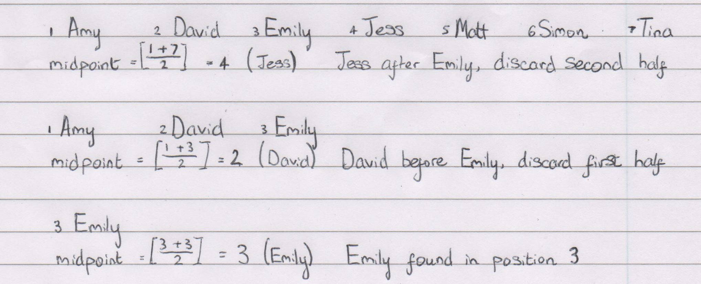

Decision Maths: Searching
Curtis Thompson
Thursday 7th April 2016
Academics
Binary Search is the only searching algorithm in D1, it is used to determine whether an item is in a list and then find the position of the item if it is in the list. Binary Search always looks at the middle of the list so is very quick, however to do this the list must be ordered. The algorithm for Binary Search is:
Select the midpoint of the list and compare with the item being searched for
If the midpoint is the item being searched for, search is complete
If the midpoint is before the item being searched for, discard the first half of the list
If the midpoint is after the item being searched for, discard the second half of the list
Repeat step 1 with the new, halved list
The main points to remember about Binary Search are:
The list must be sorted to perform this algorithm
If asked to sort the list before using the algorithm, Quick Sort must be used
When discarding one half of the list the midpoint is also discarded
The half of the list being discarded is the half which the item cannot be in if the list is sorted
At most, log(n) repeats are needed (with logarithms in base 2)
The equation (n+m)/2 can be used to find the midpoint of the list when rounded up, where n is the position of the first item and m is the position of the last item
An example of Binary Search is shown below. It starts with the original list; Amy, David, Emily, Jess, Matt, Simon, Tina. Emily is the item being searched for.

The example above shows how a question should be answered when it asks for the Binary Search algorithm to be used.